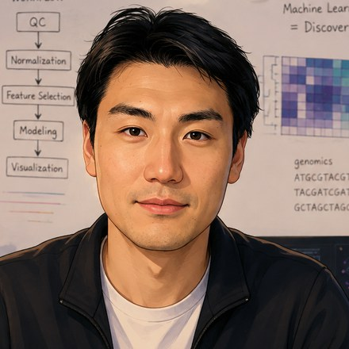

Qiran Jia
Biostatistician · Computational biology & ML · Ph.D. Candidate, USC
Statistical & ML & DL methods · Multi-omics · Single-cell · Medical imaging
About
I'm a Ph.D. candidate in Biostatistics at the University of Southern California, finishing in December 2026. I build novel statistical and machine learning methods, along with the software and analytical pipelines that implement them, for complex, high-dimensional biomedical data, working across multimodal data integration, statistical inference, and deep learning on bulk and single-cell multi-omics, longitudinal live-cell imaging, and 3D medical imaging.
Recent work includes Praxis-BGM, a semi-supervised Bayesian transfer-learning method for Gaussian mixture models via natural-gradient variational inference (Bioinformatics, 2026), and LUCID, a quasi-mediation framework for integrative multi-omics clustering and inference with high-dimensional exposures and outcomes of interest (R Journal, 2024). In summer 2026 I interned on the computational biology team at Cellanome, where I analyzed multimodal single-cell data with longitudinal live-cell imaging and endpoint transcriptomics, and built a deep-learning trajectory-modeling framework to learn morphodynamic patterns, revealing cell states missed by snapshot morphology alone. Earlier, at NYU, I worked on statistical inference with large-scale 3D neuroimaging and vision transformer models for 3D medical image segmentation.
My doctoral research is advised by David V. Conti (Conti Lab, now chair of Biostatistics & Informatics at the Colorado School of Public Health), and my master's work was advised by Hai Shu at NYU.
I'm most excited by work at the intersection of statistics, machine learning, epidemiology, and cell biology, making multi-omics and single-cell data interpretable and actionable in the AI era, and connecting rigorous inference with real biological and public-health questions.
Details on the experience and publications pages.
Interests
- Statistical inference
- Bayesian modeling
- Variational inference
- Integrative multi-omics
- Single-cell & spatial omics
- Cell imaging & morphodynamics
- Medical image analysis
- High-dimensional statistics
- Multiple testing